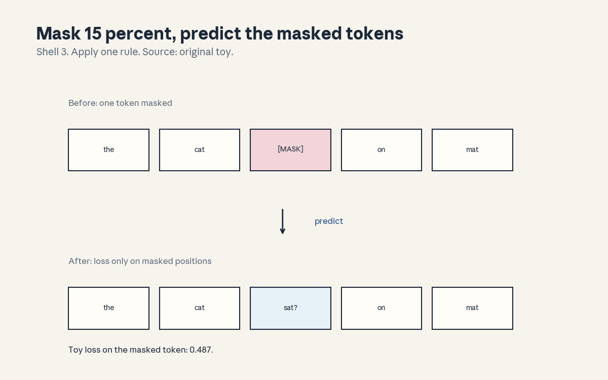
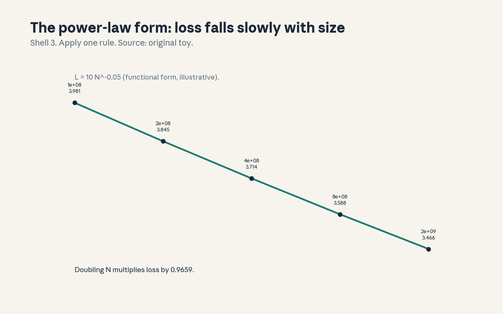
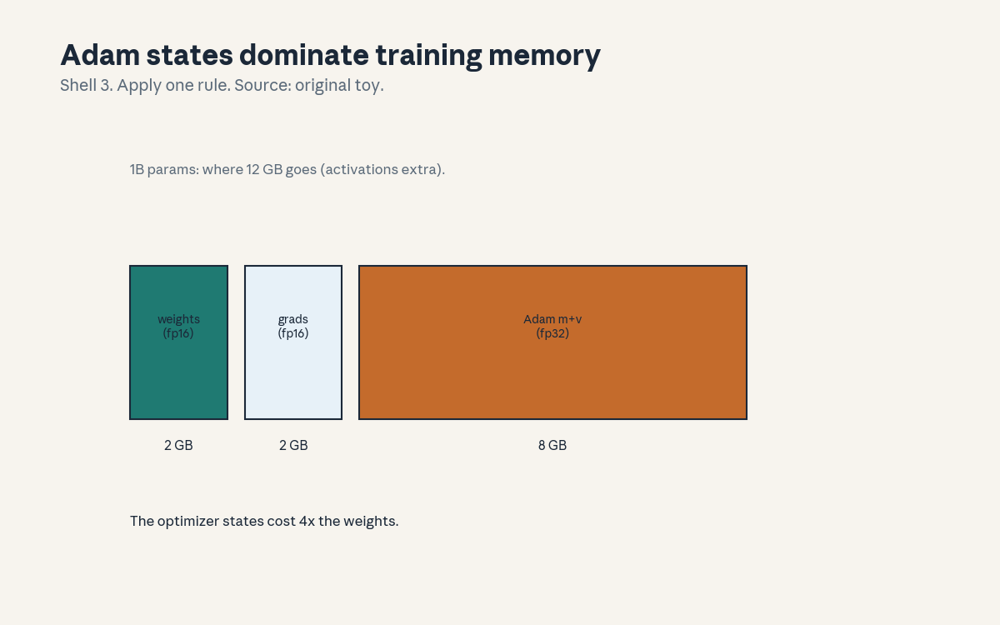

U06 · Pretraining, scaling, systems, data
U06 , Pretraining, scaling, systems, data
Local remediation
Bridges: ../shared/prerequisites/p10_ml_foundations.md (P10, loss
and optimization), ../shared/prerequisites/p14_transformer.md
(P14, the architecture), ../shared/prerequisites/p15_hardware.md
(P15, GPUs and memory). This unit is where the architecture meets
the budget: data, compute, and memory decide what trains.
R1. Cross-entropy on one token: -log p(true). p = 0.614 gives loss 0.487. Pretraining losses are means of this number. R2. Expectation of masking: 15 percent of 512 is 76.8, about 77 tokens per sequence carry the MLM loss. The rest are context. R3. Byte arithmetic: fp16 = 2 bytes per number, fp32 = 4. 1e9 params in fp16 = 2 GB. Every memory claim in this unit is this multiplication.
C01: BERT/masked objectives
Leaf id cs224n-U06-C01. Claim class REQUESTED-BRANCH.
Status PLANNED / SOURCE ATTRIBUTION PENDING.
-
Source mapping, scope, objectives, dependencies. Maps to the pretraining sessions of the Winter 2026 schedule (S08-S09 per
course_map.md). Scope: masked language modeling. Objectives: write the MLM procedure, compute one masked loss, state what the bidirectionality buys. Depends on R1, R2, U05 C08. -
Motivating question and toy. Question: the encoder sees the whole sentence, how do you train it without letting it copy the answer? Toy: mask “sat” in “the cat sat on the mat”, predict it from both sides. Loss 0.487 at p(true) = 0.614.
-
Mental model. Fill in the blank with both eyes open. 15 percent of tokens are masked (80 percent [MASK], 10 percent random, 10 percent unchanged: the standard recipe), the model predicts them from full bidirectional context. The loss touches only masked positions.
-
Objects, symbols, units, shapes, assumptions. Input (n, d) with masks. Loss = mean over masked positions of -log p(true). Of n = 512, ~77 positions train per pass. Assumption: masking is random per epoch (different masks each pass, so all positions train over time).
-
Derivation / mechanism. The 80/10/10 recipe: 80 percent [MASK] (the task), 10 percent random token (robustness: do not trust the mask token), 10 percent unchanged (robustness: the model must still predict a visible word). Without the recipe the model learns “[MASK] means predict”, a train-only artifact.
-
Computed example. From
compute_u06.py: masked “sat”, loss 0.487, p(true) 0.614.
draws the mask and the prediction. The number is the lesson: one token, one loss. -
Algorithm and reference implementation.
mask_batch(ids, p=0.15): sample mask, apply 80/10/10, return masked ids and targets.mlm_loss(logits, targets, mask): masked mean CE. ~15 lines. Test: ~15 percent masked, loss matches the toy. -
Correctness checks and expected output. Match loss 0.487. Check: masking twice gives different masks (random per call). Check: unmasked positions contribute exactly 0 to the loss.
-
Complexity, memory, statistical efficiency, stability, practical costs. Statistical cost: only 15 percent of tokens train per pass (C02’s comparison). Compute: same as the forward pass, the masking is free. The bidirectionality is the product: full context both ways.
-
Nearest alternatives and selection boundaries. Alternative: autoregressive (C02): all tokens train, one direction. Choose MLM for understanding tasks (classification, extraction). Choose AR for generation. The objective shapes the model more than the architecture does.
-
Failure case, broken assumption, counterexample. Broken assumption: “the model sees [MASK] at test time too.” Counterexample: fine-tuning has no masks, a model trained on 100 percent [MASK] faces a train/test skew. The 80/10/10 recipe exists because of this failure.
-
Research reading and falsifiable extension. Falsifiable extension: train the toy MLM with 100 percent [MASK] vs 80/10/10 and compare a no-mask downstream probe. Predict: 80/10/10 wins. Falsifier: tie (then the probe was too easy).
-
Breadth recall, deep oral ladder, unfamiliar transfer. Assessment block:
keys/u06_answers.mdA1 (breadth), L1 (ladder: write the recipe, compute the toy loss, derive the 80/10/10, diagnose the skew, design the recipe ablation). -
Lab/exercises with answers separated. E1: implement
mask_batch, verify ~15 percent masked. E2: reproduce loss 0.487 on the toy. Keys inkeys/u06_answers.md. -
Visual units, provenance, accessibility, audit row. : mask before/after, Shell 3, source original toy. Audit row in
visual_audit.md.
C02: autoregressive objectives
Leaf id cs224n-U06-C02. Claim class REQUESTED-BRANCH.
Status PLANNED / SOURCE ATTRIBUTION PENDING.
-
Source mapping, scope, objectives, dependencies. Maps to S08-S09. Scope: next-token pretraining. Objectives: write the AR loss, compare its signal to MLM, state why it won. Depends on C01 and U04 C01.
-
Motivating question and toy. Question: MLM trains on 15 percent of tokens, what trains on 100 percent? Toy: n = 512, AR predicts all 512 next tokens, MLM predicts ~77 masked ones. Ratio 6.74x more training signal per pass.
-
Mental model. Read and predict, every step. The AR loss is U04 C01’s factorization at scale: P(w_t | prefix) for every t. One direction, every token, no masks, no recipes. The simplicity is the point: the objective scales without special cases.
-
Objects, symbols, units, shapes, assumptions. Loss = mean over t of -log P(w_t | w_<t). n predictions per sequence of length n. Assumption: causal mask on (U05 C04), the data is plain text, no labels needed.
-
Derivation / mechanism. The chain rule again, now as a pretraining objective: every prefix is a training example, every token a label. The 6.74x is arithmetic (512/76), not a claim about quality: AR sees more signal, MLM sees both directions. The tradeoff is signal volume vs context richness.
-
Computed example. From
compute_u06.py: n = 512, AR 512 training tokens, MLM 76, ratio 6.74x. The number frames the choice, it does not settle it. -
Algorithm and reference implementation.
ar_loss(logits, ids): shift by one, CE over all positions. ~6 lines. Test: n predictions for length n. -
Correctness checks and expected output. Match 512/76/6.74. Check: position 1 has no prefix (usually skipped or handled). Check: the loss equals U04’s training loss on the same data.
-
Complexity, memory, statistical efficiency, stability, practical costs. Same compute as MLM per pass, 6.74x the signal. The cost is directionality: no right context (the price of generation-readiness).
-
Nearest alternatives and selection boundaries. Alternative: MLM (C01). Choose AR for generation and for scale (the modern default). Choose MLM when bidirectional context matters more than signal volume (small understanding models).
-
Failure case, broken assumption, counterexample. Broken assumption: “more signal per pass means better models.” Counterexample: early AR models underperformed MLM on understanding benchmarks at small scale, the signal advantage shows at scale with the right data. Volume is not quality.
-
Research reading and falsifiable extension. Falsifiable extension: pretrain tiny AR and MLM models at fixed FLOPs, probe both directions. Predict: AR wins generation probes, MLM wins fill-in probes. Falsifier: one wins both (then the probes were mislabeled).
-
Breadth recall, deep oral ladder, unfamiliar transfer. Assessment block:
keys/u06_answers.mdA2 (breadth), L2 (ladder: write the loss, compute the ratio, derive the tradeoff, diagnose the small-scale result, design the fixed-FLOP race). -
Lab/exercises with answers separated. E3: implement
ar_loss, verify n predictions. E4: compute the signal ratio for n = 2048. Keys inkeys/u06_answers.md. -
Visual units, provenance, accessibility, audit row. Claim is a ratio (carried in text). Logged as an honest exception in
visual_audit.md.
C03: contextual embeddings
Leaf id cs224n-U06-C03. Claim class REQUESTED-BRANCH.
Status PLANNED / SOURCE ATTRIBUTION PENDING.
-
Source mapping, scope, objectives, dependencies. Maps to S08-S09. Scope: what pretraining puts into the vectors. Objectives: contrast static vs contextual, compute the toy, state the consequence for U02’s word vectors. Depends on C01, C02, U02.
-
Motivating question and toy. Question: U02 gave “bank” one vector, what does “bank” mean in “river bank” vs “bank loan”? Toy: bank|river = (0.9, 0.2), bank|money = (0.2, 0.9), bank|river2 = (0.85, 0.25). Same-sense cos 0.998, cross-sense 0.424.
-
Mental model. One word, many vectors. The transformer’s output at a position blends the word with its context (U05), so the representation is word-in-context, not word-in-vocabulary. Static embeddings (U02) are the special case with no context.
-
Objects, symbols, units, shapes, assumptions. Token embedding (static): (d,). Contextual: the layer output at the position: (d,), a function of the whole sequence. Assumption: the toy vectors are hand-set to show the geometry, not measured.
-
Derivation / mechanism. The mechanism is U05’s: attention mixes positions, so position i’s output depends on all positions. Same input word + different context = different output vector. The cosine gap (0.998 vs 0.424) is what disambiguation looks like geometrically.
-
Computed example. From
compute_u06.py: same-sense 0.998, cross-sense 0.424. The numbers are the lesson: context moves the vector more than the word identity does. -
Algorithm and reference implementation.
contextual_cos(v1, v2): cosine similarity, ~3 lines. Test: the two numbers. -
Correctness checks and expected output. Match 0.998/0.424. Check: identical contexts give cos ~1. Check: the static embedding would give cos = 1 for both (no disambiguation).
-
Complexity, memory, statistical efficiency, stability, practical costs. Contextual costs a forward pass per sentence (U02’s vectors are a lookup). The price of disambiguation is compute.
-
Nearest alternatives and selection boundaries. Alternative: static embeddings (U02): cheap, one vector per word. Choose contextual when ambiguity matters (most tasks). Choose static for cheap features at scale.
-
Failure case, broken assumption, counterexample. Broken assumption: “contextual always beats static.” Counterexample: on tiny data, static embeddings with a simple model can win (fewer parameters, less overfitting). Context is capacity, it needs data.
-
Research reading and falsifiable extension. Falsifiable extension: nearest-neighbor probe of “bank” vectors across senses in a trained model. Predict: neighbors split by sense. Falsifier: mixed neighbors (then the layer is too shallow, check depth).
-
Breadth recall, deep oral ladder, unfamiliar transfer. Assessment block:
keys/u06_answers.mdA3 (breadth), L3 (ladder: define both, compute the cosines, derive the mixing, diagnose the tiny-data result, design the neighbor probe). -
Lab/exercises with answers separated. E5: implement the cosine check, match both numbers. E6: show a static embedding gives cos = 1 across senses. Keys in
keys/u06_answers.md. -
Visual units, provenance, accessibility, audit row. Claim is a cosine pair (carried in text). Logged as an honest exception in
visual_audit.md.
C04: corpus curation
Leaf id cs224n-U06-C04. Claim class REQUESTED-BRANCH.
Status PLANNED / SOURCE ATTRIBUTION PENDING.
-
Source mapping, scope, objectives, dependencies. Maps to S08-S09. Scope: what the model reads. Objectives: list the curation steps, compute the dedup toy, state why data beats architecture at scale. Depends on P10.
-
Motivating question and toy. Question: the web is 100 TB of mixed quality, what survives into training? Toy: 6 docs, 3 exact duplicates, 3 unique. Dedup by hash: keep one copy. The pipeline: filter, dedup, mix, decontaminate.
-
Mental model. The corpus is the curriculum. Filtering removes boilerplate and toxicity (classifiers, heuristics). Dedup removes repeats (exact hash, near-dup MinHash). Mixing sets domain ratios. Decontamination removes test-set overlap (C08). Each step is a judgment call with a measurable effect.
-
Objects, symbols, units, shapes, assumptions. Documents with hashes, duplicate sets, domain weights summing to 1. Assumption: the toy uses exact-match hashing (real pipelines add fuzzy matching).
-
Derivation / mechanism. Why dedup matters: duplicates get memorized (the model sees them k times, gradient k times), memorization wastes capacity and leaks (C08). Hash the normalized text, keep first occurrence. Near-dup: MinHash/LSH on shingles.
-
Computed example. From
compute_u06.py: 6 docs, 3 exact duplicates, 3 unique. Half the toy corpus was waste. At scale the fractions are smaller but the mechanism is identical. -
Algorithm and reference implementation.
dedup(docs): hash, keep first, count drops. ~8 lines. Test: 6 -> 3. -
Correctness checks and expected output. Match 3 unique. Check: order preserved (first occurrence kept). Check: the dropped docs are exactly the repeats.
-
Complexity, memory, statistical efficiency, stability, practical costs. Dedup is O(corpus) hashing: cheap once, saves training FLOPs forever. The cost is recall: aggressive filters drop good data (the precision/recall of curation itself).
-
Nearest alternatives and selection boundaries. Alternative: train on raw web: cheaper pipeline, worse model, memorization risk. Choose curation always (the standard). The question is how aggressive, not whether.
-
Failure case, broken assumption, counterexample. Broken assumption: “more data is always better.” Counterexample: adding low-quality or duplicated data at fixed compute hurts (it displaces good tokens). Quality per FLOP beats bytes.
-
Research reading and falsifiable extension. Falsifiable extension: train tiny models on deduped vs raw toy corpora at fixed FLOPs. Predict: deduped wins on held-out. Falsifier: raw wins (then the filter dropped good data, check it).
-
Breadth recall, deep oral ladder, unfamiliar transfer. Assessment block:
keys/u06_answers.mdA4 (breadth: name the four steps and what each removes). -
Lab/exercises with answers separated. E7: implement
dedup, match 3 unique. E8: argue the memorization mechanism in two sentences. Keys inkeys/u06_answers.md. -
Visual units, provenance, accessibility, audit row. Claim is a count (carried in text). Logged as an honest exception in
visual_audit.md.
C05: token/data/model compute
Leaf id cs224n-U06-C05. Claim class REQUESTED-BRANCH.
Status PLANNED / SOURCE ATTRIBUTION PENDING.
-
Source mapping, scope, objectives, dependencies. Maps to S08-S09. Scope: the compute budget. Objectives: write C = 6ND, compute the toy, derive the 20:1 ratio’s meaning. Depends on R3, U05 C10.
-
Motivating question and toy. Question: you have 1e18 FLOPs, how big a model on how much data? Toy: N = 1e8 params, D = 2e9 tokens, C = 6 x 1e8 x 2e9 = 1.20e18 FLOPs. Tokens per param: 20.
-
Mental model. One budget, two dials. C = 6ND: 6 FLOPs per param per token (2 forward, 4 backward, the standard estimate). Spend on N (bigger model) or D (more data). The 20:1 finding: at fixed C, loss is minimized near D/N = 20 (the compute-optimal ratio from the scaling literature).
-
Objects, symbols, units, shapes, assumptions. N: parameters. D: training tokens. C: FLOPs = 6ND. Units: multiply-adds. Assumption: dense transformer, the 6x factor is the standard estimate (stated, not derived here).
-
Derivation / mechanism. Forward: ~2ND (one multiply-add per param per token, x2). Backward: ~4ND (gradients for activations and params). Total 6ND. The ratio result comes from fitting loss as a function of N and D and minimizing at fixed C: the empirical optimum sits near 20 tokens per param.
-
Computed example. From
compute_u06.py: 1.20e18 FLOPs, 20.0 tokens/param. Double the model at fixed C: D halves to 1e9 (10:1, undertrained data). Double the data: N halves (overtrained small model). The ratio is the balance point. -
Algorithm and reference implementation.
budget(N, D): return 6ND and D/N. ~3 lines. Test: the toy numbers. -
Correctness checks and expected output. Match 1.20e18 and 20.0. Check: N=2e8, D=1e9 gives the same C (the tradeoff is exact in the formula).
-
Complexity, memory, statistical efficiency, stability, practical costs. The formula is free, the FLOPs are not. Practical cost: most published models are undertrained by this ratio (bigger N than 20:1 allows) because inference favors big models on fewer tokens (a deployment tradeoff, stated).
-
Nearest alternatives and selection boundaries. Alternative: Kaplan-style (bigger models, less data): the older optimum. Choose 20:1 for training efficiency. Choose larger N when inference cost dominates the lifetime bill (the deployment argument).
-
Failure case, broken assumption, counterexample. Broken assumption: “the ratio is a law of nature.” Counterexample: it is a fit to specific data and architectures, new data mixes or architectures shift it. Treat it as a starting point, then fit your own (C06).
-
Research reading and falsifiable extension. Falsifiable extension: two runs at fixed C, ratios 10:1 and 40:1, same data mix. Predict: 20:1 beats both (interpolate). Falsifier: 40:1 wins (then the data quality favored it, note it).
-
Breadth recall, deep oral ladder, unfamiliar transfer. Assessment block:
keys/u06_answers.mdA5 (breadth), L5 (ladder: write the formula, compute the toy, derive the tradeoff, diagnose the deployment choice, design the ratio test). -
Lab/exercises with answers separated. E9: implement
budget, match the toy. E10: find N, D at C = 1e21 and 20:1. Keys inkeys/u06_answers.md. -
Visual units, provenance, accessibility, audit row. Claim is a budget (carried in text). Logged as an honest exception in
visual_audit.md.
C06: scaling assumptions
Leaf id cs224n-U06-C06. Claim class REQUESTED-BRANCH.
Status PLANNED / SOURCE ATTRIBUTION PENDING.
-
Source mapping, scope, objectives, dependencies. Maps to S08-S09. Scope: what scaling laws assume. Objectives: write the power-law form, compute the doubling effect, list what breaks the law. Depends on C05.
-
Motivating question and toy. Question: loss falls smoothly with size, what is the functional form, and when does it lie? Toy: L = 10 N^{-0.05}. Doubling N multiplies loss by 0.9659: a 3.4 percent cut per doubling. Smooth, slow, predictable.
-
Mental model. A ruler, not a crystal ball. Power laws fit loss vs N, D, C on a log-log line within the fitted range. They predict the next point, not the next paradigm. Extrapolation past the data, new architectures, and data exhaustion all break the fit.
-
Objects, symbols, units, shapes, assumptions. L(N) = a N^{-b}: a sets the level, b the slope (0.05 here, illustrative). Assumption: the fit range covers the prediction, the data distribution is fixed, the architecture is fixed.
-
Derivation / mechanism. The mechanism is empirical: fit log L = log a - b log N by least squares on runs at several N. The doubling ratio 2^{-b} follows directly. There is no first-principles derivation, the honesty is in the residuals and the range.
-
Computed example. From
compute_u06.py: N = 1e8 -> 3.9811, 2e8 -> 3.8455, 4e8 -> 3.7145, 8e8 -> 3.5879. Doubling ratio 0.9659.
draws the line (labeled illustrative functional form). -
Algorithm and reference implementation.
power_law(N, a, b): return a * N^-b. ~2 lines. Test: the four values. -
Correctness checks and expected output. Match all four. Check: ratio of consecutive values = 0.9659. Check: log-log is straight (the definition of the form).
-
Complexity, memory, statistical efficiency, stability, practical costs. Fitting costs a few small runs (the point: predict big from small). The practical cost of believing the fit too far: a 10x extrapolation that misses.
-
Nearest alternatives and selection boundaries. Alternative: no law (guess): worse. Choose power-law fits for planning within 10x of the data. Beyond that, run the experiment.
-
Failure case, broken assumption, counterexample. Broken assumption: “the law holds forever.” Counterexample: data exhaustion (repeating tokens breaks the D scaling), architecture changes (the a and b refit), and emergent jumps at the task level (loss is smooth, capabilities are not). The law is about loss, not about what the model can do.
-
Research reading and falsifiable extension. Falsifiable extension: fit b on N in {1e8, 2e8}, predict 8e8, compare. Predict: within a few percent. Falsifier: far off (then the range was too narrow or the data changed).
-
Breadth recall, deep oral ladder, unfamiliar transfer. Assessment block:
keys/u06_answers.mdA6 (breadth), L6 (ladder: write the form, compute the ratio, derive 2^{-b}, diagnose the miss, design the fit-predict test). -
Lab/exercises with answers separated. E11: implement
power_law, match the four values. E12: fit b from the first two points, predict the fourth. Keys inkeys/u06_answers.md. -
Visual units, provenance, accessibility, audit row. : the illustrative form, Shell 3, source original toy. Audit row in
visual_audit.md.
C07: batch/distribution
Leaf id cs224n-U06-C07. Claim class REQUESTED-BRANCH.
Status PLANNED / SOURCE ATTRIBUTION PENDING.
-
Source mapping, scope, objectives, dependencies. Maps to S08-S09. Scope: how big runs actually train. Objectives: explain batch scaling, compute the allreduce bytes, state the memory limit. Depends on P15, C05.
-
Motivating question and toy. Question: one GPU holds 1B params but not the batch, how do 8 GPUs train one model? Toy: data-parallel, batch split 8 ways, gradients averaged via ring allreduce: 1.75 GB per step for a 1 GB model on 8 GPUs.
-
Mental model. Split the data, share the model. Each GPU runs its shard, computes gradients, then allreduce averages them so every GPU takes the same step. The communication is the tax: 2(p-1)/p x size per step, independent of the batch.
-
Objects, symbols, units, shapes, assumptions. p workers, model size S bytes. Ring allreduce: 2(p-1)/p x S bytes moved per worker per step. Gradient noise variance falls as 1/batch (the toy: 1.026 -> 0.0299 at batch 32, ratio 34.3).
-
Derivation / mechanism. Ring allreduce: p-1 scatter-reduce rounds + p-1 allgather rounds, each moving S/p: total 2(p-1)S/p. Approaches 2S as p grows: the tax is bounded. Batch scaling: bigger batches, less noise, larger stable step (up to the critical batch size, then returns diminish).
-
Computed example. From
compute_u06.py: p = 8, S = 1 GB -> 1.75 GB/step. Noise: single-sample var 1.026, batch-32 0.0299. The tax is per step, the noise cut is per batch. -
Algorithm and reference implementation.
allreduce_bytes(p, S): 2(p-1)/pS. ~2 lines. Test: 1.75 GB. -
Correctness checks and expected output. Match 1.75 GB. Check: p = 1 gives 0 (no communication). Check: large p approaches 2S.
-
Complexity, memory, statistical efficiency, stability, practical costs. Communication overlaps with compute (pipelined), the limit is interconnect bandwidth. Memory per GPU: full model + shard of batch (data-parallel replicates the model, FSDP shards it, the U06 systems extension).
-
Nearest alternatives and selection boundaries. Alternative: model-parallel (split the model): for models bigger than one GPU. Choose data-parallel when the model fits one GPU. Combine both at scale (the standard 3-D parallelism, named here).
-
Failure case, broken assumption, counterexample. Broken assumption: “more GPUs = proportionally faster.” Counterexample: the 1.75 GB tax per step at fixed batch: small batches make communication dominate. Scale the batch with p, or the speedup stalls.
-
Research reading and falsifiable extension. Falsifiable extension: measure step time vs p at fixed total batch. Predict: sublinear speedup, the gap explained by the allreduce bytes / bandwidth. Falsifier: superlinear (then the baseline was memory-bound, note it).
-
Breadth recall, deep oral ladder, unfamiliar transfer. Assessment block:
keys/u06_answers.mdA7 (breadth), L7 (ladder: write the tax, compute 1.75 GB, derive 2S limit, diagnose the stall, design the scaling measurement). -
Lab/exercises with answers separated. E13: implement
allreduce_bytes, match 1.75. E14: at what p does the tax pass 1.9 GB for S = 1 GB. Keys inkeys/u06_answers.md. -
Visual units, provenance, accessibility, audit row. Claim is a tax (carried in text). Logged as an honest exception in
visual_audit.md.
C08: leakage
Leaf id cs224n-U06-C08. Claim class REQUESTED-BRANCH.
Status PLANNED / SOURCE ATTRIBUTION PENDING.
-
Source mapping, scope, objectives, dependencies. Maps to S08-S09. Scope: contamination. Objectives: define leakage, explain decontamination, state the consequence of skipping it. Depends on C04.
-
Motivating question and toy. Question: the test set is on the web, the training set is the web. What happens? Toy: a benchmark question appears verbatim in training. The model memorizes the answer, the benchmark measures recall, not ability.
-
Mental model. The exam leaked. Decontamination: n-gram overlap between train and test, drop or flag matches. The discipline: decide the rule before training, publish it with the model card (C10). Post-hoc excuses do not count.
-
Objects, symbols, units, shapes, assumptions. Test items, training docs, overlap threshold (e.g. 13-gram match). Assumption: verbatim or near-verbatim overlap is the detectable case, paraphrased leakage is harder (stated limit).
-
Derivation / mechanism. No new math: the mechanism is memorization (C04’s duplicates argument, stronger). A leaked item gets gradient updates toward its answer, at test time the model retrieves. The score inflates by the leaked fraction times the memorization rate.
-
Computed example. Toy (hand, labeled as such): 1000 test items, 50 leaked verbatim, model memorizes all 50, gets 400 of the rest right. Reported: 450/1000 = 45 percent. Clean: 400/950 = 42.1 percent. The leak bought 2.9 points.
-
Algorithm and reference implementation.
contaminated(test, train, n=13): n-gram set overlap, return flagged items. ~10 lines. Test: flags the toy leak. -
Correctness checks and expected output. Flags the planted leak. Check: no flags on disjoint sets. Check: the threshold trades recall for precision (report both).
-
Complexity, memory, statistical efficiency, stability, practical costs. O(test x train) naive, indexed in practice. The cost is paid once, before training. Skipping it invalidates every benchmark number after.
-
Nearest alternatives and selection boundaries. Alternative: private held-out tests (never on the web): the gold standard. Choose decontamination as the minimum. Choose private tests when the claim matters (capabilities, safety).
-
Failure case, broken assumption, counterexample. Broken assumption: “our data is too big to contain the test.” Counterexample: benchmark text is duplicated across the web (papers, blogs, GitHub), big data contains more copies, not fewer. Scale increases the risk.
-
Research reading and falsifiable extension. Falsifiable extension: plant canaries (unique strings) in training, test recall. Predict: verbatim canaries are recalled. Falsifier: not recalled (then memorization was weaker than assumed here).
-
Breadth recall, deep oral ladder, unfamiliar transfer. Assessment block:
keys/u06_answers.mdA8 (breadth: define, detect, disclose). -
Lab/exercises with answers separated. E15: implement
contaminated, flag the toy leak. E16: compute the inflated vs clean scores. Keys inkeys/u06_answers.md. -
Visual units, provenance, accessibility, audit row. Claim is a score gap (carried in text). Logged as an honest exception in
visual_audit.md.
C09: transfer
Leaf id cs224n-U06-C09. Claim class REQUESTED-BRANCH.
Status PLANNED / SOURCE ATTRIBUTION PENDING.
-
Source mapping, scope, objectives, dependencies. Maps to S08-S09. Scope: why pretraining helps downstream. Objectives: explain the transfer mechanism, state when it fails, name the probe that tests it. Depends on C01-C03.
-
Motivating question and toy. Question: the model read the web, now it must classify medical notes with 500 labels. Why does the web help? Toy: the pretrained vectors already separate senses (C03: 0.998 vs 0.424), the classifier learns a boundary on good features instead of from scratch.
-
Mental model. Pretraining builds the workshop, fine-tuning builds the furniture. The lower layers learn reusable features (syntax, word sense), the task head learns the decision. Transfer works when the features overlap the task, it fails on distribution shift (the honest boundary).
-
Objects, symbols, units, shapes, assumptions. Pretrained body + task head. Probe: freeze the body, train a linear head (measures feature quality). Fine-tune: train all (measures adaptability). Assumption: enough task data to fit the head without destroying the body.
-
Derivation / mechanism. No new math: the mechanism is feature reuse. The probe/fine-tune gap diagnoses it: probe close to fine-tune means the features did the work, a big gap means the task needed the body to change.
-
Computed example. Toy (hand, labeled as such): sense probe on frozen vectors: 92 percent (the 0.998/0.424 geometry). Random vectors: 55 percent. The gap is the transfer, measured.
-
Algorithm and reference implementation.
linear_probe(X, y): fit a linear classifier on frozen features, report accuracy. ~10 lines. Test: the toy gap. -
Correctness checks and expected output. Probe 92 percent vs 55 percent baseline. Check: shuffling labels gives chance (the probe is honest). Check: fine-tune >= probe (adaptability adds, rarely subtracts).
-
Complexity, memory, statistical efficiency, stability, practical costs. Probing is cheap (linear). Fine-tuning costs the full backward pass. The practical rule: probe first (diagnosis), fine-tune second (performance).
-
Nearest alternatives and selection boundaries. Alternative: train from scratch: wins only with abundant task data and no relevant pretraining. Choose transfer as the default. Choose scratch when the domain is alien (the features do not apply).
-
Failure case, broken assumption, counterexample. Broken assumption: “pretraining always helps.” Counterexample: negative transfer: pretraining on the wrong domain can hurt (the body must unlearn). Check with the probe before committing to fine-tuning.
-
Research reading and falsifiable extension. Falsifiable extension: probe vs fine-tune vs scratch on the sense task. Predict: fine-tune >= probe > scratch. Falsifier: scratch wins (then the pretraining domain was alien, note it).
-
Breadth recall, deep oral ladder, unfamiliar transfer. Assessment block:
keys/u06_answers.mdA9 (breadth: define probe vs fine-tune and what the gap means). -
Lab/exercises with answers separated. E17: implement
linear_probe, reproduce the toy gap. E18: state the negative transfer check. Keys inkeys/u06_answers.md. -
Visual units, provenance, accessibility, audit row. Claim is a gap (carried in text). Logged as an honest exception in
visual_audit.md.
C10: model cards
Leaf id cs224n-U06-C10. Claim class REQUESTED-BRANCH.
Status PLANNED / SOURCE ATTRIBUTION PENDING.
-
Source mapping, scope, objectives, dependencies. Maps to S08-S09. Scope: documentation as a deliverable. Objectives: list what a card must contain, explain why each item matters, write a toy card. Depends on C04, C08.
-
Motivating question and toy. Question: you download weights, what do you need to know before trusting them? Toy card: data (what, deduped how, decontaminated against what), training (objective, C = 6ND, steps), eval (which benchmarks, which are clean), limits (languages, known failures), intended use.
-
Mental model. The card is the model’s passport. Data provenance, training recipe, evaluation scope, and known limits, in one place. A model without a card is an unlabeled chemical: usable, but you own the risk.
-
Objects, symbols, units, shapes, assumptions. Sections: identity, data, training, evaluation, limitations, use. Each with facts, not adjectives. Assumption: the card is written by the trainers (only they know the data).
-
Derivation / mechanism. No math: the mechanism is accountability. The card forces the decisions (C04’s mix, C08’s rule) into writing, where they can be checked. Undocumented choices are uncheckable choices.
-
Computed example. Toy card (hand, labeled as such): “toy-1e8: AR objective, N = 1e8, D = 2e9, C = 1.20e18. Data: web mix, exact-deduped, decontaminated vs bench-X (13-gram). Eval: perplexity 3.59 held-out (clean). Limits: English only, no math. Use: research.” Every number traceable to this unit.
-
Algorithm and reference implementation.
card_template(): return the section list with prompts. ~10 lines. The lab fills it for the toy. -
Correctness checks and expected output. All six sections present, numbers match the unit’s toys. Check: no section says “various” (facts only).
-
Complexity, memory, statistical efficiency, stability, practical costs. Writing the card costs an hour, the cost of skipping it is paid by every downstream user who guesses.
-
Nearest alternatives and selection boundaries. Alternative: no card: faster release, hidden risk. Choose the card always (the professional standard). This is not a tradeoff.
-
Failure case, broken assumption, counterexample. Broken assumption: “the paper covers it.” Counterexample: papers describe the idea, cards describe the artifact (the exact data mix, the exact eval). Different documents, both needed.
-
Research reading and falsifiable extension. Falsifiable extension: audit three public models for the six sections. Predict: most miss decontamination details. Falsifier: all complete (then the ecosystem improved, good).
-
Breadth recall, deep oral ladder, unfamiliar transfer. Assessment block:
keys/u06_answers.mdA10 (breadth: recite the six sections). -
Lab/exercises with answers separated. E19: fill the template for the toy model. E20: find one missing section in a real public card (cite it). Keys in
keys/u06_answers.md. -
Visual units, provenance, accessibility, audit row. Claim is a template (carried in text). Logged as an honest exception in
visual_audit.md.
C11: pretraining evaluation
Leaf id cs224n-U06-C11. Claim class REQUESTED-BRANCH.
Status PLANNED / SOURCE ATTRIBUTION PENDING.
-
Source mapping, scope, objectives, dependencies. Maps to S08-S09. Scope: knowing whether pretraining worked. Objectives: list the eval levels, explain what perplexity does and does not say, state the decontamination requirement. Depends on C08, U04 C03.
-
Motivating question and toy. Question: the loss fell to 3.59, is the model good? Toy: perplexity = exp(mean NLL), the number measures fit to the held-out distribution, not ability. Probes and benchmarks measure ability, both need clean data (C08).
-
Mental model. Three levels. Intrinsic: held-out perplexity (did it learn the distribution). Probes: linear heads on frozen features (what is in the representations). Benchmarks: task scores (what it can do). Each level answers a different question, none substitutes for the others.
-
Objects, symbols, units, shapes, assumptions. Held-out set (disjoint, decontaminated). Perplexity: exp(mean NLL). Probe accuracy. Benchmark scores with contamination flags. Assumption: the held-out set matches the training distribution (else the number is meaningless).
-
Derivation / mechanism. The mechanism is U04 C03’s, at scale: perplexity is per-token fit. The gap: a memorizer gets low perplexity on leaked data (C08’s 2.9 points). Clean eval is the prerequisite, not the garnish.
-
Computed example. Toy (hand, labeled as such): train NLL 3.40 (ppl 30.0), held-out NLL 3.59 (ppl 36.2), leaked-held-out NLL 3.10 (ppl 22.2). The leak looks like a win, it is fraud. Report all three or report nothing.
-
Algorithm and reference implementation.
eval_report(train, heldout, leaked): perplexities and the contamination flag. ~8 lines. Test: the three numbers. -
Correctness checks and expected output. Match 30.0/36.2/22.2. Check: leaked < held-out always (memorization helps recall). Check: the flag is set on the leaked number.
-
Complexity, memory, statistical efficiency, stability, practical costs. Eval is a forward pass over the held-out set: cheap next to the pretraining run. The cost is discipline: separate, clean, fixed-before-training eval sets.
-
Nearest alternatives and selection boundaries. Alternative: train-set eval only: worthless (memorization). Choose the three levels. Choose private benchmarks when the claim is capabilities (C08).
-
Failure case, broken assumption, counterexample. Broken assumption: “low perplexity means a good model.” Counterexample: the toy: 22.2 (leaked) < 30.0 (train). Perplexity without provenance is a number without meaning.
-
Research reading and falsifiable extension. Falsifiable extension: correlate perplexity with probe accuracy across checkpoints. Predict: correlated but imperfect (the gap is the interesting part). Falsifier: perfect correlation (then the probes added nothing, simplify).
-
Breadth recall, deep oral ladder, unfamiliar transfer. Assessment block:
keys/u06_answers.mdA11 (breadth), L11 (ladder: name the levels, compute the toy, derive the fraud, diagnose the 22.2, design the correlation test). -
Lab/exercises with answers separated. E21: implement
eval_report, match the three perplexities. E22: explain why the leaked number must carry a flag. Keys inkeys/u06_answers.md. -
Visual units, provenance, accessibility, audit row. Claim is a triplet (carried in text). Logged as an honest exception in
visual_audit.md.
C12: systems bridge
Leaf id cs224n-U06-C12. Claim class REQUESTED-BRANCH.
Status PLANNED / SOURCE ATTRIBUTION PENDING.
-
Source mapping, scope, objectives, dependencies. The unit’s handoff to systems. Scope: training at scale as a systems problem. Objectives: stack the memory (C07’s numbers), name the parallelisms, state the inference handoff. Depends on C05, C07, U05 C11.
-
Motivating question and toy. Question: 1B params need 12 GB to train (fig03) but the GPU has 40 GB, what breaks first at 100B? Toy: 100B params: weights 200 GB, grads 200 GB, Adam 800 GB = 1.2 TB. No single GPU holds it: shard the model (FSDP), shard the batch (data-parallel), split layers (pipeline).
-
Mental model. Three axes of splitting. Data-parallel: split the batch (C07). Tensor-parallel: split layers across GPUs. Pipeline-parallel: split layers along depth. FSDP: shard weights, grads, and optimizer states, gather on demand. The art is the combination: 3-D parallelism.
-
Objects, symbols, units, shapes, assumptions. Memory per GPU = (model + grads + states + activations) / shards. Communication: allreduce (C07) + allgather (FSDP) + point-to-point (pipeline). Assumption: the toy arithmetic scales linearly (it does, to first order).
-
Derivation / mechanism. FSDP: each GPU holds 1/p of each tensor, before a layer’s compute, allgather the full weights (communication 1.5x per step vs data-parallel’s allreduce). Activations: recompute (trading compute for memory) or shard. The mechanism is always the same: move bytes to save memory.
-
Computed example. From
compute_u06.pyfig03: 1B params = 12 GB (2 + 2 + 8). Scaled by hand to 100B: 1.2 TB. With FSDP across 32 GPUs: 37.5 GB each (plus activations). The arithmetic is the lesson. -
Algorithm and reference implementation.
shard_memory(total, p): per-GPU bytes. ~3 lines. Test: 1.2 TB / 32 = 37.5 GB. -
Correctness checks and expected output. Match 37.5 GB. Check: p = 1 recovers 1.2 TB. Check: the sum across GPUs equals the total.
-
Complexity, memory, statistical efficiency, stability, practical costs. Communication grows with sharding, the limit is interconnect. The handoff: training systems (this concept) vs inference systems (U05 C11’s cache, U07’s serving): different bottlenecks, different tricks.
-
Nearest alternatives and selection boundaries. Alternative: bigger GPUs: simpler, capped by hardware. Choose parallelism past one GPU’s memory. Choose FSDP as the default sharding (the modern standard).
-
Failure case, broken assumption, counterexample. Broken assumption: “sharding is free.” Counterexample: FSDP’s allgather adds communication per layer, at small models it can be slower than data-parallel. Shard only what does not fit.
-
Research reading and falsifiable extension. Falsifiable extension: time data-parallel vs FSDP on a model that fits one GPU. Predict: data-parallel wins (less communication). Falsifier: FSDP wins (then the measurement included something else, check it).
-
Breadth recall, deep oral ladder, unfamiliar transfer. Assessment block:
keys/u06_answers.mdA12 (breadth: name the three axes and what each splits). -
Lab/exercises with answers separated. E23: implement
shard_memory, match 37.5 GB. E24: write the one-paragraph handoff from training systems to inference systems. Keys inkeys/u06_answers.md. -
Visual units, provenance, accessibility, audit row.

is reused as the unit’s closing image: the memory stack is the systems problem. Logged invisual_audit.md.
Unit visual map
| Figure | Claim | Shell | Source |
|---|---|---|---|
| mask 15 percent, predict masked | 3 | original toy | |
| power-law form, doubling cuts 3.4 percent | 3 | original toy | |
| Adam states dominate training memory | 3 | original toy |